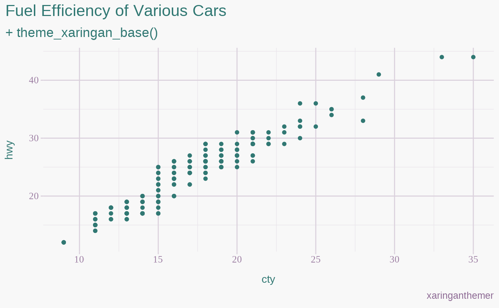
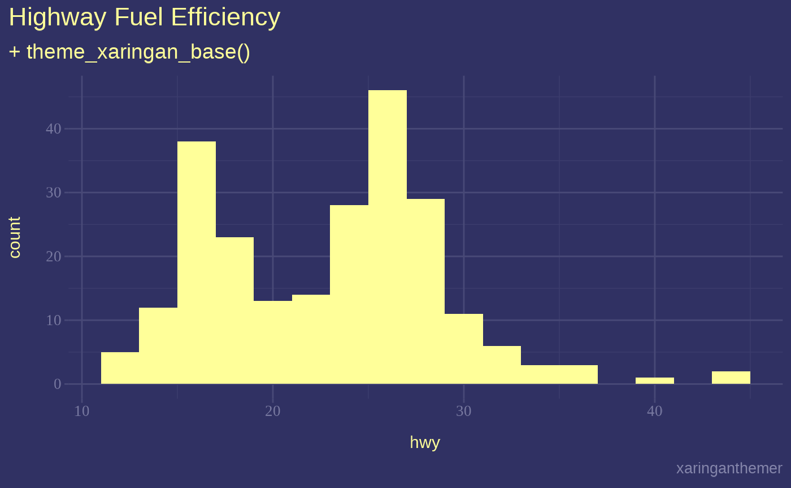

![[Maturing]](figures/lifecycle-maturing.svg)
Provides a base plot theme for ggplot2 to match the xaringan
slide theme created by xaringanthemer. The theme is designed to create a
general plot style from two colors, a background_color and a text_color
(or foreground color). Also accepts an accent_color and an
accent_secondary_color that are xaringanthemer is not required for the
base theme. Use theme_xaringan() or theme_xaringan_inverse() in xaringan
slides styled by xaringanthemer for a plot theme that matches the slide
style. See vignette("ggplot2-themes") for more information and examples.
Usage
theme_xaringan_base(
text_color,
background_color,
...,
set_ggplot_defaults = TRUE,
accent_color = NULL,
accent_secondary_color = NULL,
text_font = NULL,
text_font_use_google = NULL,
text_font_size = NULL,
title_font = NULL,
title_font_use_google = NULL,
title_font_size = NULL,
use_showtext = NULL
)Arguments
- text_color
Color for text and foreground
- background_color
Color for background
- ...
Ignored
- set_ggplot_defaults
Should defaults be set for ggplot2 geoms? Defaults to TRUE. To restore ggplot's defaults, or the previously set geom defaults, see
theme_xaringan_restore_defaults().- accent_color
Color for titles and accents, inherits from
header_colorortext_color. Used for thetitlebase setting inggplot2::theme(), and additionally for setting thecolororfillof ggplot2 geom defaults.- accent_secondary_color
Color for secondary accents, inherits from
text_bold_colororaccent_color. Used only when setting ggplot2 geom defaults.- text_font
Font to use for text elements, passed to
sysfonts::font_add_google(), if available andtext_font_use_googleisTRUE. Inherits fromtext_font_family. If manually specified, can be agoogle_font().- text_font_use_google
Is
text_fontavailable on Google Fonts?- text_font_size
Base text font size, inherits from
text_font_size, or defaults to 11.- title_font
Font to use for title elements, passed to
sysfonts::font_add_google(), if available andtitle_font_use_googleisTRUE. Inherits fromtitle_font_family. If manually specified, can be agoogle_font().- title_font_use_google
Is
title_fontavailable on Google Fonts?- title_font_size
Base text font size, inherits from
title_font_size, or defaults to 14.- use_showtext
If
TRUEthe showtext package will be used to register Google fonts. Set toFALSEto disable this feature entirely, which may result in errors during plotting if the fonts used are not available locally. The default isTRUEwhen the showtext package is installed.
See also
Other xaringanthemer ggplot2 themes:
theme_xaringan(),
theme_xaringan_inverse(),
theme_xaringan_set_defaults()
Examples
# Requires ggplot2
has_ggplot2 <- requireNamespace("ggplot2", quietly = TRUE)
if (has_ggplot2) {
library(ggplot2)
plot1 <- ggplot(mpg) +
aes(cty, hwy) +
geom_point() +
theme_xaringan_base(
text_color = "#602f6b", # imperial
background_color = "#f8f8f8", # light gray
accent_color = "#317873", # myrtle green
title_font = "sans",
text_font = "serif",
set_ggplot_defaults = TRUE
) +
labs(
title = "Fuel Efficiency of Various Cars",
subtitle = "+ theme_xaringan_base()",
caption = "xaringanthemer"
)
print(plot1)
plot2 <- ggplot(mpg) +
aes(hwy) +
geom_histogram(binwidth = 2) +
theme_xaringan_base(
text_color = "#a8a9c8", # light purple
background_color = "#303163", # deep slate purple
accent_color = "#ffff99", # canary yellow
title_font = "sans",
text_font = "serif",
set_ggplot_defaults = TRUE
) +
labs(
title = "Highway Fuel Efficiency",
subtitle = "+ theme_xaringan_base()",
caption = "xaringanthemer"
)
print(plot2)
}

